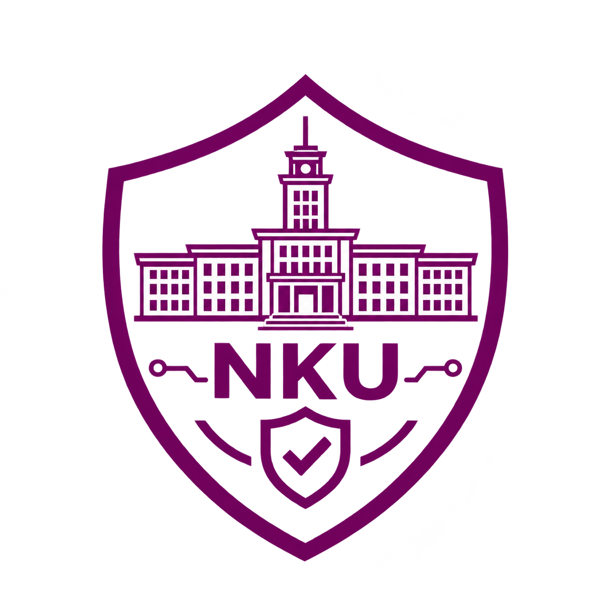

跳转到主要内容
● NANKAI UNIVERSITY · CAMPUS SAFETY
安全同行 · 守护每一天

南开安全卫士
NANKAI SAFETY ASSISTANT
首页
安全学习
⌄
学习任务
安全答题
情景训练
模拟考试
错题本
安全服务
⌄
隐患上报
应急求助
校园地图
安全资讯
⌄
安全资讯
安全活动
安全知识库
AI 助手
个人中心
⌄
个人中心
消息中心
紧急求助 ↗
CAMPUS COMMUNITY · EVENTS
安全宣传与活动
了解安全知识挑战、讲座和宣传活动；活动报名与签到功能为本机演示。
PARTICIPATE
活动项目为功能展示，不是学校已经发布的实际活动或报名通知，报名只记录在本机。
我的参与记录